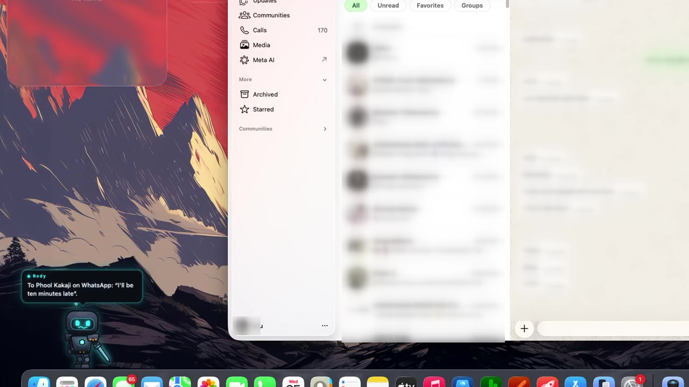
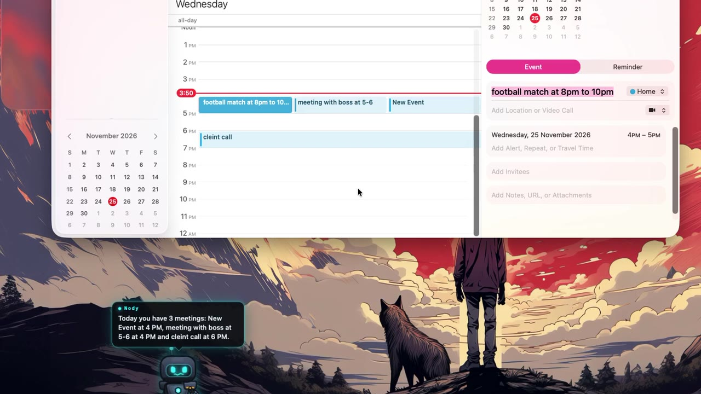
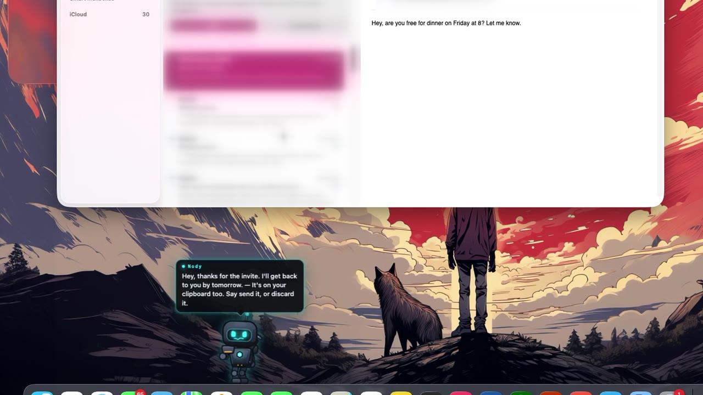
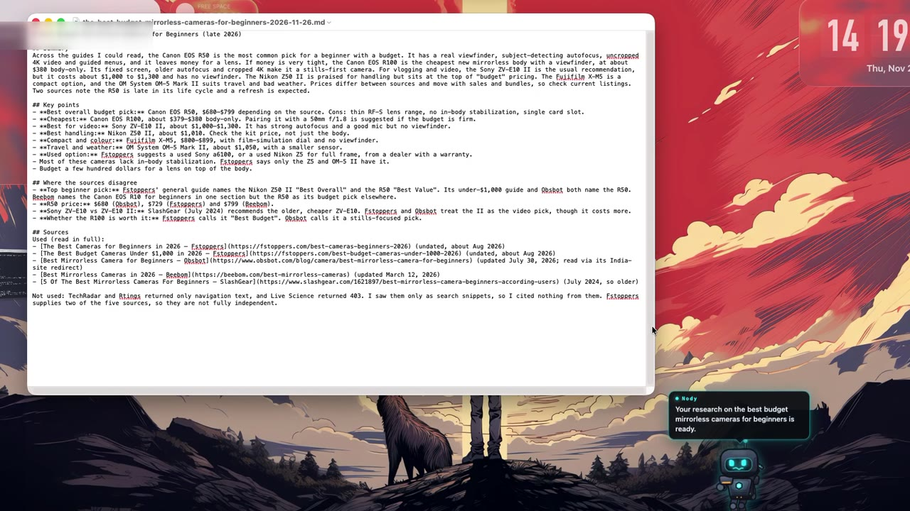
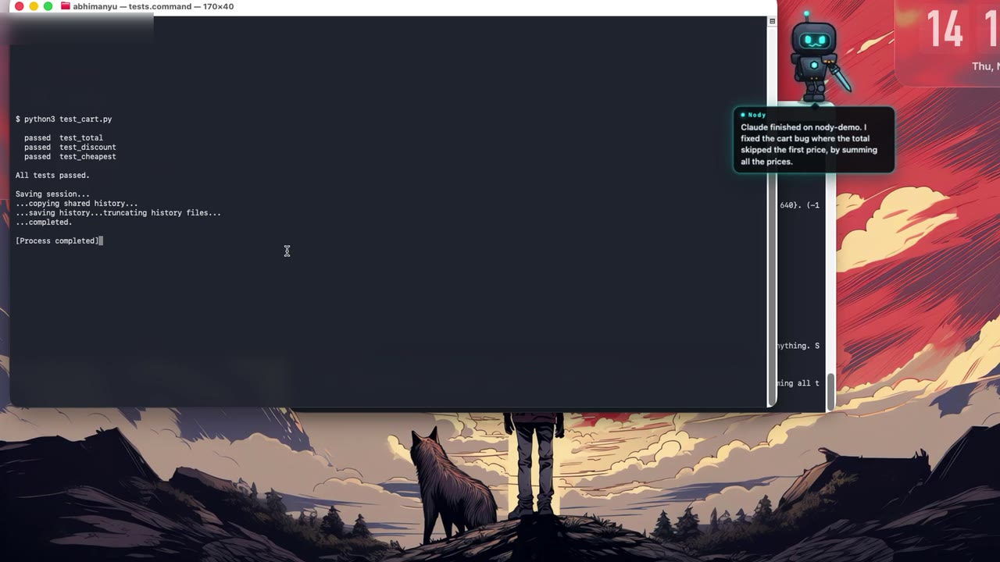
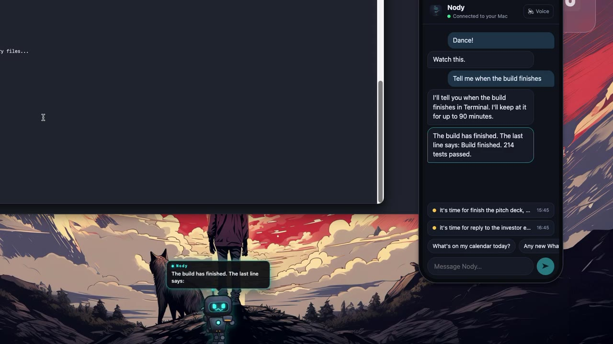
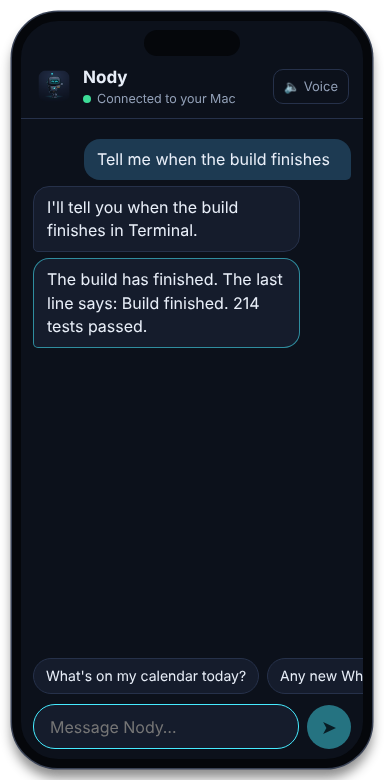
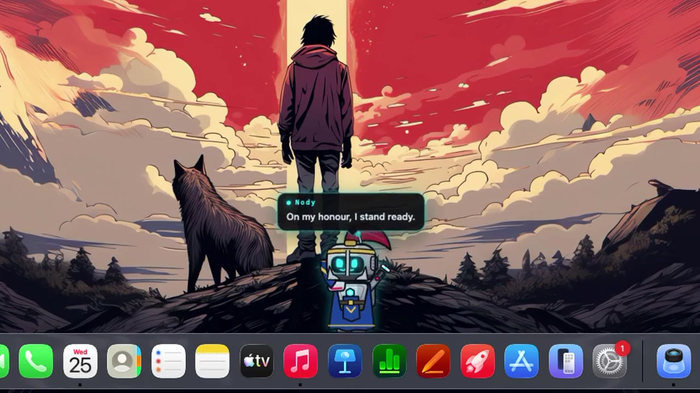
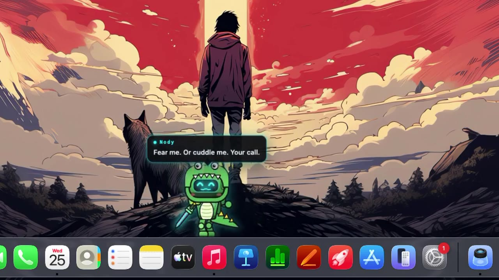
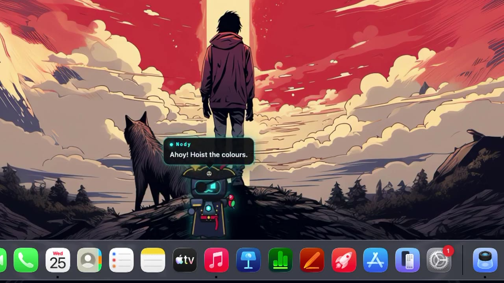

A hundred seconds of Nody on a real Mac, doing real jobs: planning the day, messaging a friend, answering mail, researching, fixing code, reporting back to a phone.
Out loud, with a hotkey, from your phone, or by iMessage. In your own words, no commands to learn.
In your real apps: Calendar, Mail, WhatsApp, Terminal, the browser, your files. Not in a chat window you have to copy from.
Anything that leaves your Mac is read back first and waits for your yes. Long jobs get a word the moment they finish.
Every example below is a real exchange from the film. He reads back anything that leaves your Mac before it goes, and he waits for your yes.

Anyone in your WhatsApp, by voice. He writes it, reads it back and waits for your yes. He also tells you who wrote and what they said, so you never have to open the app.

He reads your meetings, fits your to-dos into the gaps, sets a reminder for each block and, if you like, puts the blocks in your calendar.

He tells you which emails need you and skips the rest. Ask for a reply and he drafts it in your tone, from your own sent mail. Nothing goes out until you say send.

Give him a topic and get on with your day. He reads several sources, writes a note with a summary, the key points, where the sources disagree and the links, and tells you when it's ready.

Point him at a project and he starts Claude Code on it, in the background, and tells you the moment it's done. It can edit files, it never commits. Needs your own Claude account.

A long build, a big download, an export, a render. Ask him to keep an eye on it, switch to something else, and he speaks up the moment it finishes, on your Mac and on your phone.
Opens sites and searches them by voice: YouTube, Wikipedia, Maps, GitHub, any address.
“Open YouTube and look up lo-fi beats.”Kept on your Mac, spoken when due, and texted to your phone if you ask.
“Remind me at five to call the bank.”Adds, moves and cancels events in the Calendar app, with any account you use there.
“Move my three o'clock to tomorrow.”He indexes the folders you choose and answers from your PDFs and files, naming the file he used.
“What does the lease say about notice?”He listens to a call you're on, writes the notes, and drafts the follow-up.
“Start meeting notes.”Opens apps, arranges windows, plays music, reads what's on your screen and explains it.
“Put Chrome on the left and Slack on the right.”Reminders, list changes, calendar edits and window moves can all be taken back.
“Undo that.”An optional voice lock makes him answer your voice only. One question checks his own health.
“Is everything working?”
Each one changes how he looks, how he talks and his signature move. You start with three and unlock the rest as you use him. Pick one and watch him change at the top of the page.



The real Nody, running in your browser. Throw him around, drag the windows and watch him ride them, or try his moves: rocket, backflip, dance, sword fight.
A chat assistant in a browser tab answers questions. Nody is on your desktop and does the job.
Nody is an app on your Mac, not a service. We run no servers that hear you.
The microphone, speech recognition, his voice, the language model, your reminders, notes, history and document index.
The weather, the news, a web search, your mail: he goes to the service that has it, and nowhere else.
No sign-up with us and no analytics in the app. The licence check sends your key and your Mac's name, about once a day. Nothing else.
For harder jobs, connect your own Claude Code sign-in or Anthropic API key. It uses your account, and you can leave it off.
The details are in the privacy policy.
Secure checkout by Dodo Payments, our reseller. Your licence key and download link arrive by email. Already bought? Download Nody.
Not by default. Listening, speech recognition, the language model and his voice all run on your Mac. If you ask for something online (the weather, a web search, your mail), that request goes to the service that has it. If you connect a second brain, the jobs he hands to it go to Anthropic under your own account.
No. Nody works with the model on your Mac alone. Connecting your own Claude Code sign-in or Anthropic API key is optional and makes him better at research, coding jobs, reading your screen and long mail threads. Nody is not made by or affiliated with Anthropic.
Any account you have added to the Mail and Calendar apps on your Mac: iCloud, Google, Outlook and others. Google accounts can also be connected directly.
He operates the WhatsApp app installed on your Mac, and reads your chats from that app. Nothing goes through our servers. It isn't an official WhatsApp integration, so it's your account and your responsibility. He reads every message back and waits for a yes before sending.
Switch it on in his Setup window and scan the code with your phone. The app runs on your home network (or over your own VPN, such as Tailscale, when you're out). Your Mac needs to be awake with Nody running. Away from home without a VPN, text yourself on iMessage and he replies there.
He downloads about 10 GB once: the language model, the speech models and the software that runs them. After that he starts in about half a minute and works offline.
He falls back to a smaller model that is slower and weaker at multi-step requests. We recommend 16 GB. If he doesn't run well on your Mac, the 14-day refund covers you.
No. Nody is a one-time purchase with a 14-day refund: if he doesn't work out on your Mac, write to us and you get your money back.
Yes. In his Setup window choose Move to another Mac, then enter the key on the new one.
Write to motormaniac10@gmail.com. Saying “is everything working?” to Nody first often finds the cause.